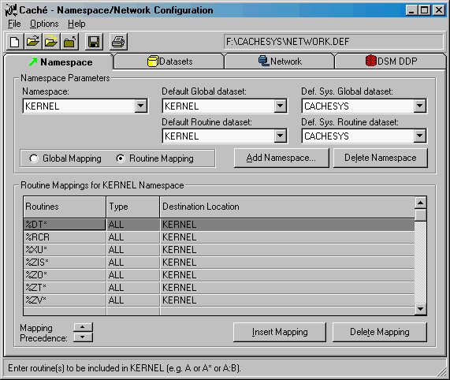
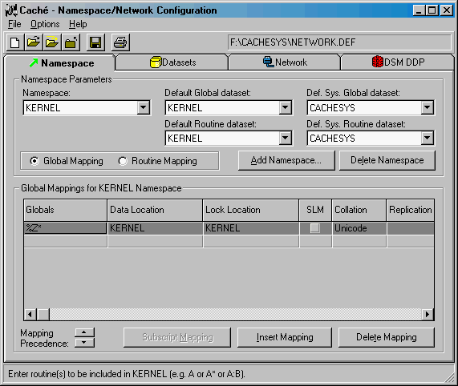

Diamond |
|
Diamond |
|
| The first jewel to be added to the Hardhats Gem series
is the Diamond. It is a clean, initialized Infrastructure-only installation of VistA
that works under Intersystems Cache. As such, it is distributed as a Cache.dat file.
The following instructions provide guidance on how to setup and integrate the Cache.dat
file into an existing configuration. NOTE: The instructions on this page were developed with Cache v 2.1.6. Cache v3 has dramatically changed the user interface, so you will need to study the notes to find the corresponding settings. For those who are eternally curious, read how the Diamond is cut. It is presumed that:
To increase the value to all Hardhats, please report errors, ask questions, etc. on the Hardhats mailing list. (Join the Hardhats mailing list if you are not already a subscriber - its free.) Cache Linux shortcut: For those who want to evaluate the Cache red Hat Linux download from Intersystems, you can download a preconfigured .cpf file. The file is named kernel.txt. Rename it to kernel.cpf, once it is downloaded, and place it in the Cache directory where the cache.cpf file is located. You will then need to specify this new kernel.cpf file as the startup configuration for Cache. If you have any doubts about this shortcut, use the steps below, instead, to update your configuration settings. |
| Let the Setup and Configuration begin...
As a precaution, be sure to have backed up your Cache installation before proceeding with the following procedure.
NOTE: It is your choice if Cache is running in the initial steps, but you will eventually be requested to shut down and then restart Cache. To prepare for a baseline VistA install on Cache, create a dataset for use by the new namespace KERNEL. Just click in the leftmost cell on the first blank line in the grid, shown below, to open a field to enter Dataset Name, etc.
With the dataset in place, go to the Namespace tab and create a new namespace (this one is named KERNEL and was added with the 'Add Namespace' button). Give the new namespace the following routine and global mappings (see images below). [NOTE: The dataset and the namespace are not required to have the same name.]  
NOTE: Shutdown Cache, in case it is currently running.
|
Search | Home | MUMPS | Fileman | Kernel | C/S, Mailman, Web | Programmer Tools | Applications